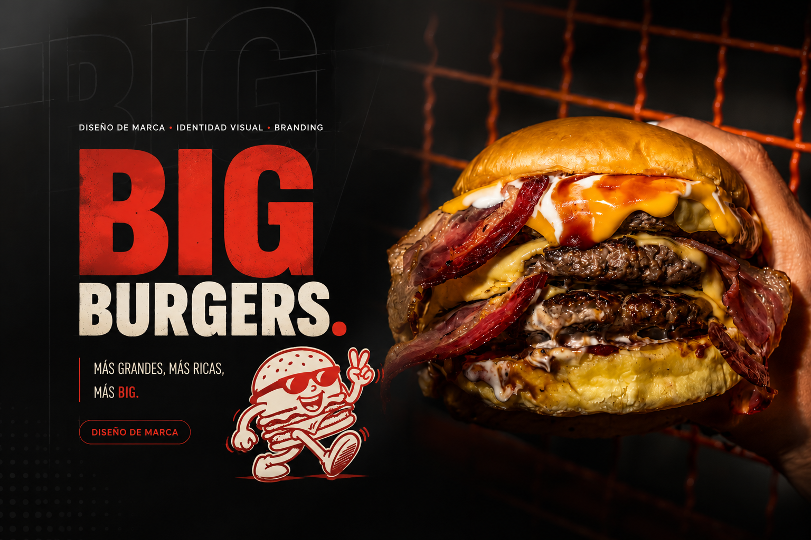
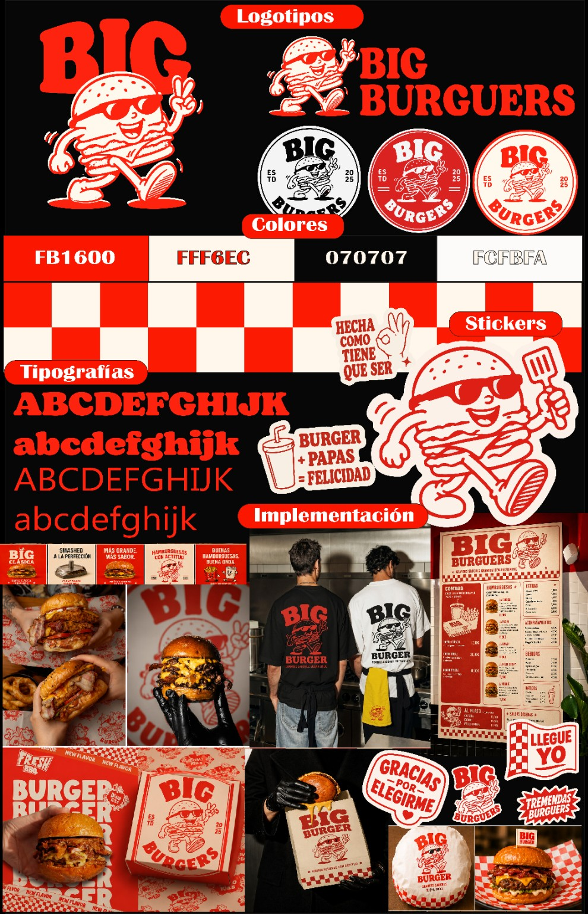
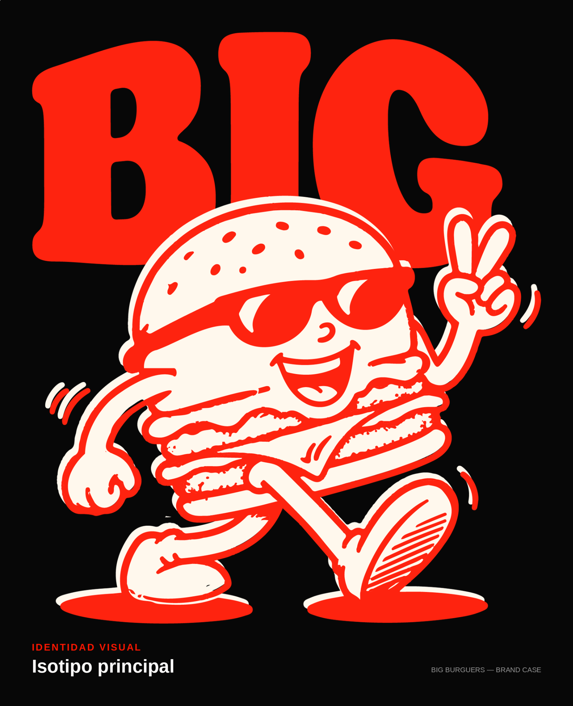
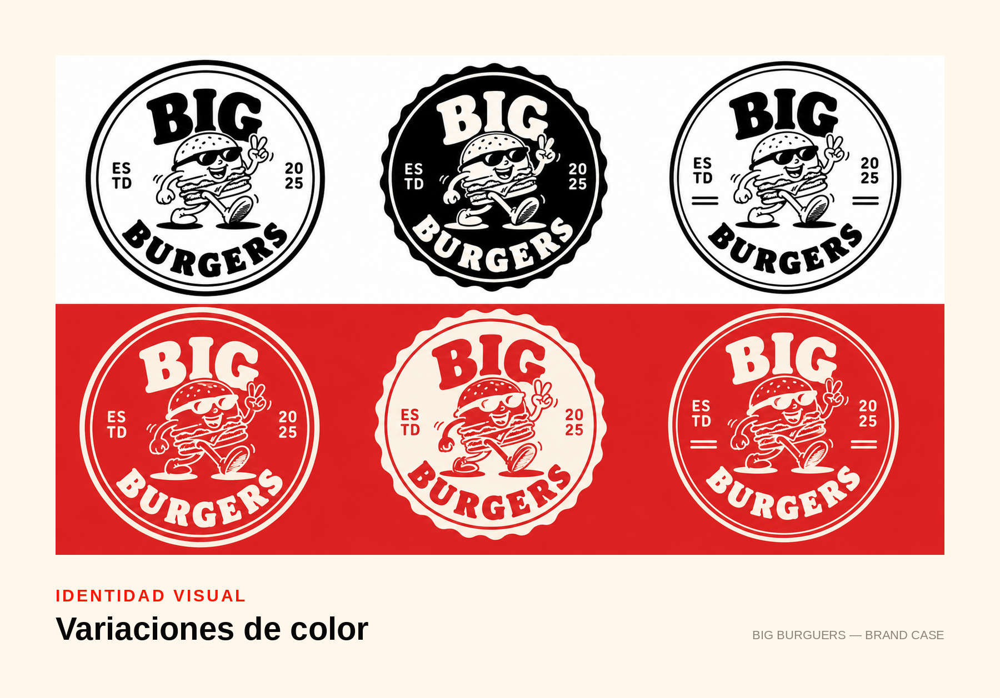
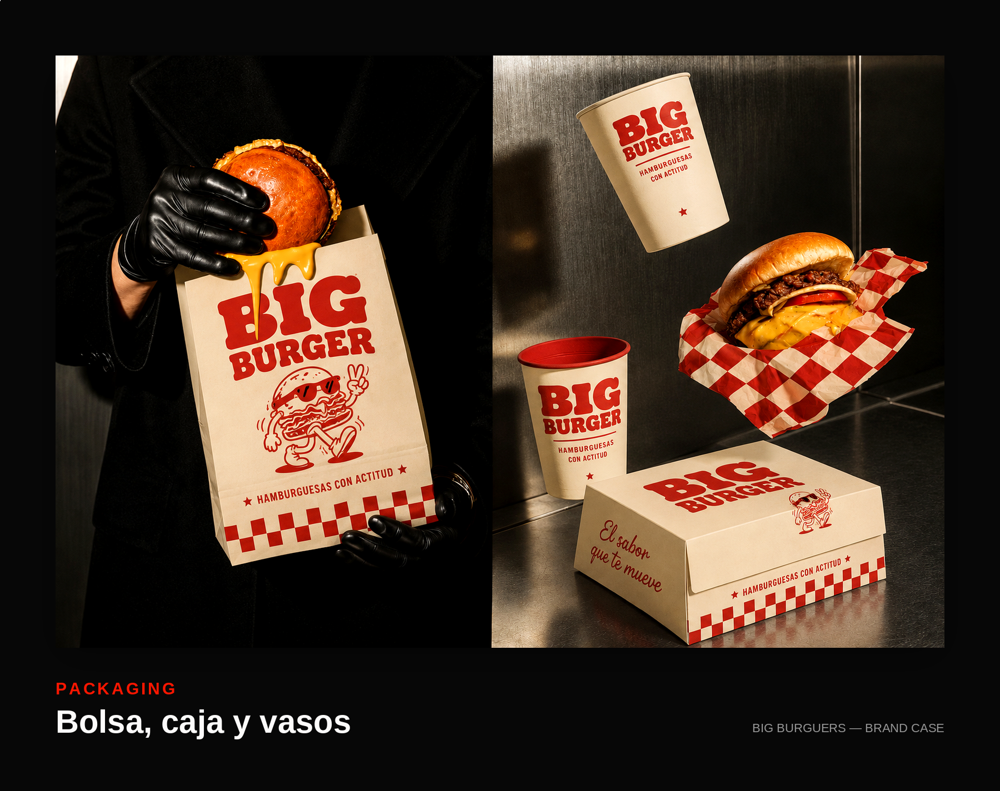
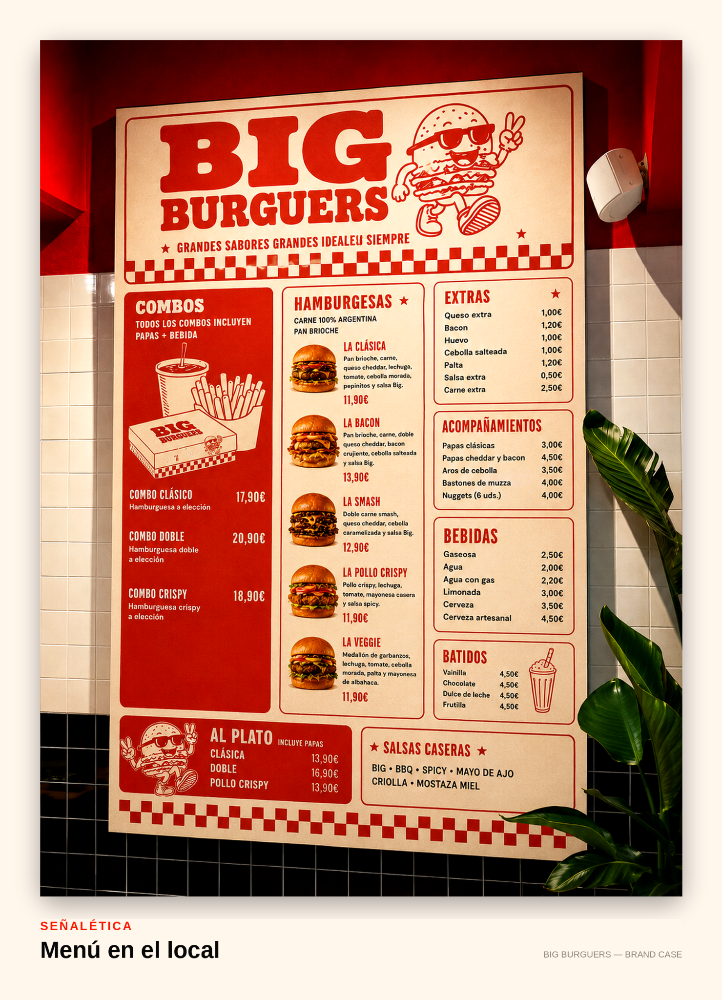
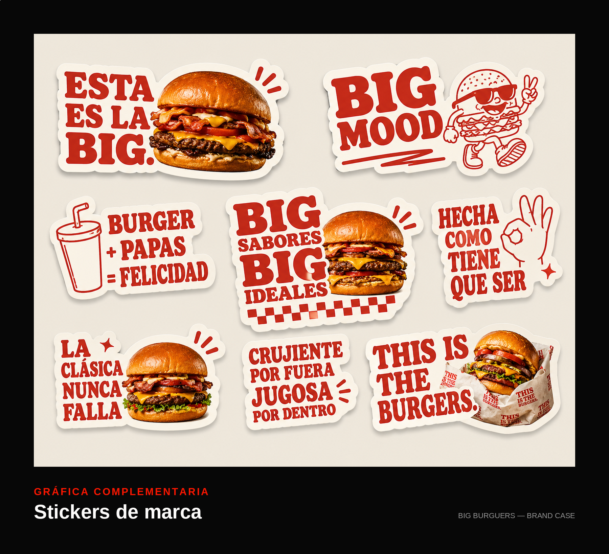
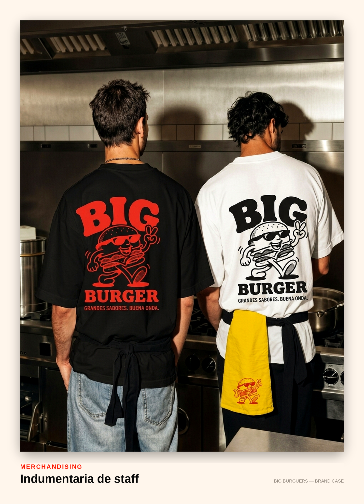

Marca urbana, divertida y de alto impacto para una hamburguesería, con una mascota ilustrada como protagonista de todo el sistema.

El objetivo fue crear una marca que se sintiera tan divertida y directa como el producto: hamburguesas grandes, sin vueltas. Definí un tono de comunicación urbano y con actitud ("Hecha como tiene que ser", "Burger + Papas = Felicidad") y una mascota —una hamburguesa con lentes de sol y actitud— como eje central del brand identity.
La idea fue que la marca hablara como habla su público: directo, con humor y sin vueltas, para que cada pieza —desde un sticker hasta una remera de staff— se sintiera parte de la misma conversación.

Ilustré la mascota en distintas poses y la combiné con tres versiones de logo system tipo sello, para stickers, packaging y redes. Trabajé una paleta de alto contraste (rojo, negro y crema) con un patrón de damero que refuerza la estética de puesto de comida callejera.


El sistema se aplicó a menú, cajas de delivery, stickers, indumentaria de equipo (remeras y delantales) y piezas para redes sociales, manteniendo siempre la misma energía visual: fotografía de producto con mucho contraste y la mascota como firma en cada pieza.




Una mascota bien diseñada da mucha más flexibilidad de comunicación que un logo estático solo.
El tono de copy es tan parte del branding como la parte visual, sobre todo en marcas de comida.